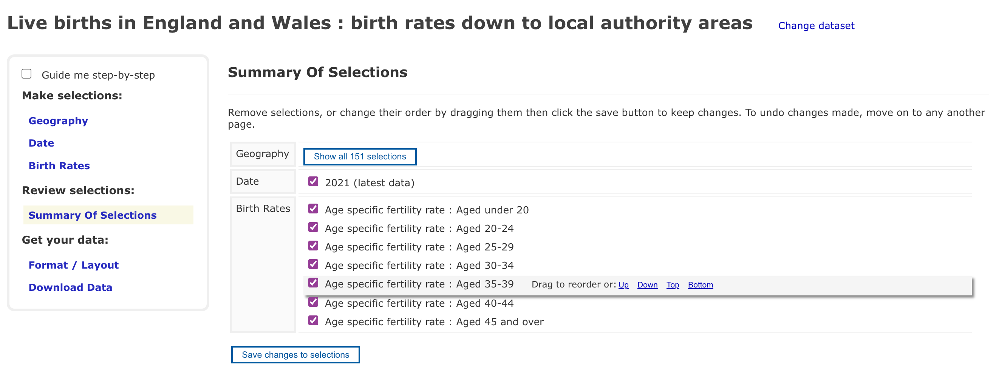
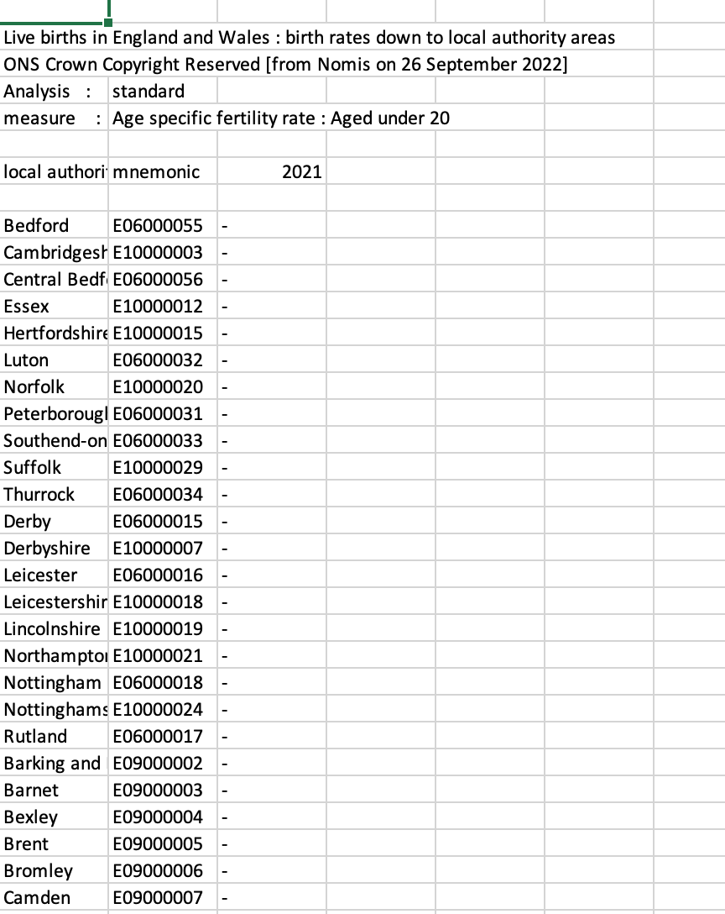

source("launch.R")
#> ##------ Mon Sep 19 13:00:30 2022 ------##
#> Launching SPHERE Modelling Platform on dcs33297
#> Error in setwd(wd_path) : cannot change working directorySPHERE-debugging
Setting wd
Getting an error straight away when trying to source launch.R as
It looks like you are trying to set the working directory as the parent of launch.R? This seems a really brittle approach. It’s mcuh better to avoid setting working directories and rather assume all processes will be performed in the root of the directory and use relative paths from the root for everything else.
I had to comment setwd(wd_path) out.
If this MUST be used (which should be extremely rare), it is best to use on.exit(setwd(here::here())) to ensure the wd is reset in case of an error.
Setting up data access
It took me quite some time to figure out that there is hidden structure expected.
I had placed the sqlite database in a given folder, let’s say the Desktops (~/Desktop) for illustrative purposes and changed the value of HPC_datapath in private.csv to ~/Desktop .
However the code expects a folder the same name as the value of LiveProject_db in which the database should be contained (i.e. the actual path to the database was being assigned to data_dir as ~/Documents/workflows/OHID/data/Y063_SynthMod and the full path resolving to "~/Documents/workflows/OHID/data/Y063_SynthMod/Y103_SynthMod_dev.db" . This is both unexpected and somewhat undocumented. Checking that the path actually resolved to a database file with an informative error that actually prints the path where the data is expected would have helped a lot.
Loading dependencies from csv files
The practice is not best practice and brittle for a number of reasons:
Necessity to manually track dependencies when this can be automated with renv. Changes to the local library can be captured with renv::snapshot() while dependencies required for scripts in a particular directory can be identified with renv::dependencies(). If you did need to load a whole bunch of packages for a module you could use: .
renv::dependencies()$Package |>
unique() |>
lapply(require, character.only = TRUE)Finding R package dependencies ... Done!Loading required package: knitrLoading required package: rmarkdownLoading required package: renv
Attaching package: 'renv'The following object is masked from 'package:rmarkdown':
runThe following objects are masked from 'package:stats':
embed, updateThe following objects are masked from 'package:utils':
history, upgradeThe following object is masked from 'package:devtools':
installThe following objects are masked from 'package:base':
autoload, load, remove[[1]]
[1] TRUE
[[2]]
[1] TRUE
[[3]]
[1] TRUEEven better would be to clean up afterwards with:
module_deps <- renv::dependencies()$Package |>
unique()
lapply(module_deps, require, character.only = TRUE)
# MODULE CODE
lapply(paste0("package:", module_deps), detach, character.only = TRUE, force = TRUE)However the order in which dependencies are unlinked become important and errors might be thrown if a package which is a dependency of another loaded package is attempted to be detached first while forcing detachment with force = TRUE might compromise the functioning of other packages unrelated to the module.
In any case, all this can be avoided by not loading and unloading packages which pollutes the search path. Instead it is STRONGLY recommended that functions are called using the :: operator. Performance gains are not worth the problems having so many packages loaded introduces, makes the function namespace explicit in the code. A few key packages like dplyr that are used heavily throughout can be loaded.
Missing variables in meta_DistributionVariables table.
I’m using the default attribute in user-input.R list:
Birthdate BinaryCHD BinaryCKD BinaryColC BinaryPA BinaryPIA BinaryStroke BinaryT2DM Binary5PD BMIPercentile DeathCause EthGrp HLQ IMDDecile Income LTLA19 NSSEC RBAC11 RUC11 SBPPercentile Sex SexualOrientation TTWDistance TTWMethodHowever, IMDDecile does not exist in the meta_DistributionVariables in Y103_SynthMod_dev.db and create-variable-groupings.R fails with a not very informative error which does not prompt user on what needs rectifying. Ideally this could be handled automatically (i.e. the attribute ignored and a warning issued to the user to inform them) or at the very least, an error which directs the user to the user-inputs.R to change the setting for IMDDecile to FALSE . In any case it feels like this should have been checked earlier and more formally.
Using system unix to detect HPC brittle
Working on a mac which evaluates to a unix system, launch.R would quit on me at the end of the session even in interactive mode.
NOMIS data problem
The NOMIS query returns NA results
structure(list(GEOGRAPHY_CODE = c("E06000005", "E06000005", "E06000005",
"E06000005", "E06000005", "E06000005", "E06000005", "E06000047",
"E06000047", "E06000047", "E06000047", "E06000047", "E06000047",
"E06000047", "E06000001", "E06000001", "E06000001", "E06000001",
"E06000001", "E06000001"), MEASURE = c(6, 7, 8, 9, 10, 11, 5,
6, 7, 8, 9, 10, 11, 5, 6, 7, 8, 9, 10, 11), OBS_VALUE = c(NA,
NA, NA, NA, NA, NA, NA, NA, NA, NA, NA, NA, NA, NA, NA, NA, NA,
NA, NA, NA)), row.names = c(NA, -20L), class = c("tbl_df", "tbl",
"data.frame")) GEOGRAPHY_CODE MEASURE OBS_VALUE
1 E06000005 6 NA
2 E06000005 7 NA
3 E06000005 8 NA
4 E06000005 9 NA
5 E06000005 10 NA
6 E06000005 11 NA
7 E06000005 5 NA
8 E06000047 6 NA
9 E06000047 7 NA
10 E06000047 8 NA
11 E06000047 9 NA
12 E06000047 10 NA
13 E06000047 11 NA
14 E06000047 5 NA
15 E06000001 6 NA
16 E06000001 7 NA
17 E06000001 8 NA
18 E06000001 9 NA
19 E06000001 10 NA
20 E06000001 11 NAhere’s the full response
structure(list(DATE = c(2021, 2021, 2021, 2021, 2021, 2021, 2021,
2021, 2021, 2021), DATE_NAME = c(2021, 2021, 2021, 2021, 2021,
2021, 2021, 2021, 2021, 2021), DATE_CODE = c(2021, 2021, 2021,
2021, 2021, 2021, 2021, 2021, 2021, 2021), DATE_TYPE = c("date",
"date", "date", "date", "date", "date", "date", "date", "date",
"date"), DATE_TYPECODE = c(0, 0, 0, 0, 0, 0, 0, 0, 0, 0), DATE_SORTORDER = c(0,
0, 0, 0, 0, 0, 0, 0, 0, 0), GEOGRAPHY = c(1820327937, 1820327937,
1820327937, 1820327937, 1820327937, 1820327937, 1820327937, 1820327938,
1820327938, 1820327938), GEOGRAPHY_NAME = c("Darlington", "Darlington",
"Darlington", "Darlington", "Darlington", "Darlington", "Darlington",
"County Durham", "County Durham", "County Durham"), GEOGRAPHY_CODE = c("E06000005",
"E06000005", "E06000005", "E06000005", "E06000005", "E06000005",
"E06000005", "E06000047", "E06000047", "E06000047"), GEOGRAPHY_TYPE = c("local authorities: district / unitary (as of April 2019)",
"local authorities: district / unitary (as of April 2019)", "local authorities: district / unitary (as of April 2019)",
"local authorities: district / unitary (as of April 2019)", "local authorities: district / unitary (as of April 2019)",
"local authorities: district / unitary (as of April 2019)", "local authorities: district / unitary (as of April 2019)",
"local authorities: district / unitary (as of April 2019)", "local authorities: district / unitary (as of April 2019)",
"local authorities: district / unitary (as of April 2019)"),
GEOGRAPHY_TYPECODE = c(434, 434, 434, 434, 434, 434, 434,
434, 434, 434), GEOGRAPHY_SORTORDER = c(0, 0, 0, 0, 0, 0,
0, 1, 1, 1), MEASURE = c(6, 7, 8, 9, 10, 11, 5, 6, 7, 8),
MEASURE_NAME = c("Age specific fertility rate : Aged 20-24",
"Age specific fertility rate : Aged 25-29", "Age specific fertility rate : Aged 30-34",
"Age specific fertility rate : Aged 35-39", "Age specific fertility rate : Aged 40-44",
"Age specific fertility rate : Aged 45 and over", "Age specific fertility rate : Aged under 20",
"Age specific fertility rate : Aged 20-24", "Age specific fertility rate : Aged 25-29",
"Age specific fertility rate : Aged 30-34"), MEASURE_CODE = c(6,
7, 8, 9, 10, 11, 5, 6, 7, 8), MEASURE_TYPE = c("measures",
"measures", "measures", "measures", "measures", "measures",
"measures", "measures", "measures", "measures"), MEASURE_TYPECODE = c(1000,
1000, 1000, 1000, 1000, 1000, 1000, 1000, 1000, 1000), MEASURE_SORTORDER = c(0,
1, 2, 3, 4, 5, 6, 0, 1, 2), MEASURES = c(20100, 20100, 20100,
20100, 20100, 20100, 20100, 20100, 20100, 20100), MEASURES_NAME = c("Value",
"Value", "Value", "Value", "Value", "Value", "Value", "Value",
"Value", "Value"), OBS_VALUE = c(NA, NA, NA, NA, NA, NA,
NA, NA, NA, NA), OBS_STATUS = c("Q", "Q", "Q", "Q", "Q",
"Q", "Q", "Q", "Q", "Q"), OBS_STATUS_NAME = c("These figures are missing.",
"These figures are missing.", "These figures are missing.",
"These figures are missing.", "These figures are missing.",
"These figures are missing.", "These figures are missing.",
"These figures are missing.", "These figures are missing.",
"These figures are missing."), OBS_CONF = c(FALSE, FALSE,
FALSE, FALSE, FALSE, FALSE, FALSE, FALSE, FALSE, FALSE),
OBS_CONF_NAME = c("Free (free for publication)", "Free (free for publication)",
"Free (free for publication)", "Free (free for publication)",
"Free (free for publication)", "Free (free for publication)",
"Free (free for publication)", "Free (free for publication)",
"Free (free for publication)", "Free (free for publication)"
), URN = c("Nm-202d1d32336e0d1820327937d0d0d0d0d0d0d0d6d20100",
"Nm-202d1d32336e0d1820327937d0d0d0d0d0d0d0d7d20100", "Nm-202d1d32336e0d1820327937d0d0d0d0d0d0d0d8d20100",
"Nm-202d1d32336e0d1820327937d0d0d0d0d0d0d0d9d20100", "Nm-202d1d32336e0d1820327937d0d0d0d0d0d0d0d10d20100",
"Nm-202d1d32336e0d1820327937d0d0d0d0d0d0d0d11d20100", "Nm-202d1d32336e0d1820327937d0d0d0d0d0d0d0d5d20100",
"Nm-202d1d32336e0d1820327938d0d0d0d0d0d0d0d6d20100", "Nm-202d1d32336e0d1820327938d0d0d0d0d0d0d0d7d20100",
"Nm-202d1d32336e0d1820327938d0d0d0d0d0d0d0d8d20100"), RECORD_OFFSET = c(0,
1, 2, 3, 4, 5, 6, 7, 8, 9), RECORD_COUNT = c(2219, 2219,
2219, 2219, 2219, 2219, 2219, 2219, 2219, 2219)), row.names = c(NA,
-10L), class = c("tbl_df", "tbl", "data.frame")) |> knitr::kable()| DATE | DATE_NAME | DATE_CODE | DATE_TYPE | DATE_TYPECODE | DATE_SORTORDER | GEOGRAPHY | GEOGRAPHY_NAME | GEOGRAPHY_CODE | GEOGRAPHY_TYPE | GEOGRAPHY_TYPECODE | GEOGRAPHY_SORTORDER | MEASURE | MEASURE_NAME | MEASURE_CODE | MEASURE_TYPE | MEASURE_TYPECODE | MEASURE_SORTORDER | MEASURES | MEASURES_NAME | OBS_VALUE | OBS_STATUS | OBS_STATUS_NAME | OBS_CONF | OBS_CONF_NAME | URN | RECORD_OFFSET | RECORD_COUNT |
|---|---|---|---|---|---|---|---|---|---|---|---|---|---|---|---|---|---|---|---|---|---|---|---|---|---|---|---|
| 2021 | 2021 | 2021 | date | 0 | 0 | 1820327937 | Darlington | E06000005 | local authorities: district / unitary (as of April 2019) | 434 | 0 | 6 | Age specific fertility rate : Aged 20-24 | 6 | measures | 1000 | 0 | 20100 | Value | NA | Q | These figures are missing. | FALSE | Free (free for publication) | Nm-202d1d32336e0d1820327937d0d0d0d0d0d0d0d6d20100 | 0 | 2219 |
| 2021 | 2021 | 2021 | date | 0 | 0 | 1820327937 | Darlington | E06000005 | local authorities: district / unitary (as of April 2019) | 434 | 0 | 7 | Age specific fertility rate : Aged 25-29 | 7 | measures | 1000 | 1 | 20100 | Value | NA | Q | These figures are missing. | FALSE | Free (free for publication) | Nm-202d1d32336e0d1820327937d0d0d0d0d0d0d0d7d20100 | 1 | 2219 |
| 2021 | 2021 | 2021 | date | 0 | 0 | 1820327937 | Darlington | E06000005 | local authorities: district / unitary (as of April 2019) | 434 | 0 | 8 | Age specific fertility rate : Aged 30-34 | 8 | measures | 1000 | 2 | 20100 | Value | NA | Q | These figures are missing. | FALSE | Free (free for publication) | Nm-202d1d32336e0d1820327937d0d0d0d0d0d0d0d8d20100 | 2 | 2219 |
| 2021 | 2021 | 2021 | date | 0 | 0 | 1820327937 | Darlington | E06000005 | local authorities: district / unitary (as of April 2019) | 434 | 0 | 9 | Age specific fertility rate : Aged 35-39 | 9 | measures | 1000 | 3 | 20100 | Value | NA | Q | These figures are missing. | FALSE | Free (free for publication) | Nm-202d1d32336e0d1820327937d0d0d0d0d0d0d0d9d20100 | 3 | 2219 |
| 2021 | 2021 | 2021 | date | 0 | 0 | 1820327937 | Darlington | E06000005 | local authorities: district / unitary (as of April 2019) | 434 | 0 | 10 | Age specific fertility rate : Aged 40-44 | 10 | measures | 1000 | 4 | 20100 | Value | NA | Q | These figures are missing. | FALSE | Free (free for publication) | Nm-202d1d32336e0d1820327937d0d0d0d0d0d0d0d10d20100 | 4 | 2219 |
| 2021 | 2021 | 2021 | date | 0 | 0 | 1820327937 | Darlington | E06000005 | local authorities: district / unitary (as of April 2019) | 434 | 0 | 11 | Age specific fertility rate : Aged 45 and over | 11 | measures | 1000 | 5 | 20100 | Value | NA | Q | These figures are missing. | FALSE | Free (free for publication) | Nm-202d1d32336e0d1820327937d0d0d0d0d0d0d0d11d20100 | 5 | 2219 |
| 2021 | 2021 | 2021 | date | 0 | 0 | 1820327937 | Darlington | E06000005 | local authorities: district / unitary (as of April 2019) | 434 | 0 | 5 | Age specific fertility rate : Aged under 20 | 5 | measures | 1000 | 6 | 20100 | Value | NA | Q | These figures are missing. | FALSE | Free (free for publication) | Nm-202d1d32336e0d1820327937d0d0d0d0d0d0d0d5d20100 | 6 | 2219 |
| 2021 | 2021 | 2021 | date | 0 | 0 | 1820327938 | County Durham | E06000047 | local authorities: district / unitary (as of April 2019) | 434 | 1 | 6 | Age specific fertility rate : Aged 20-24 | 6 | measures | 1000 | 0 | 20100 | Value | NA | Q | These figures are missing. | FALSE | Free (free for publication) | Nm-202d1d32336e0d1820327938d0d0d0d0d0d0d0d6d20100 | 7 | 2219 |
| 2021 | 2021 | 2021 | date | 0 | 0 | 1820327938 | County Durham | E06000047 | local authorities: district / unitary (as of April 2019) | 434 | 1 | 7 | Age specific fertility rate : Aged 25-29 | 7 | measures | 1000 | 1 | 20100 | Value | NA | Q | These figures are missing. | FALSE | Free (free for publication) | Nm-202d1d32336e0d1820327938d0d0d0d0d0d0d0d7d20100 | 8 | 2219 |
| 2021 | 2021 | 2021 | date | 0 | 0 | 1820327938 | County Durham | E06000047 | local authorities: district / unitary (as of April 2019) | 434 | 1 | 8 | Age specific fertility rate : Aged 30-34 | 8 | measures | 1000 | 2 | 20100 | Value | NA | Q | These figures are missing. | FALSE | Free (free for publication) | Nm-202d1d32336e0d1820327938d0d0d0d0d0d0d0d8d20100 | 9 | 2219 |
I also tried to download the data manually

and got similarly empty results

Questions
Why S4
Why
eval(substitute))when loading S4 methodsWhy no signature on S4 methods
Are overrides by
hpc_mode = TRUEimportant?